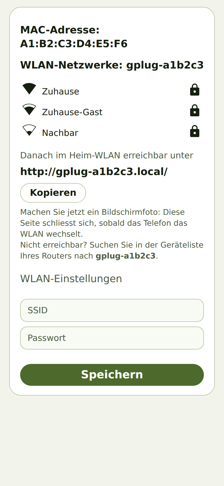
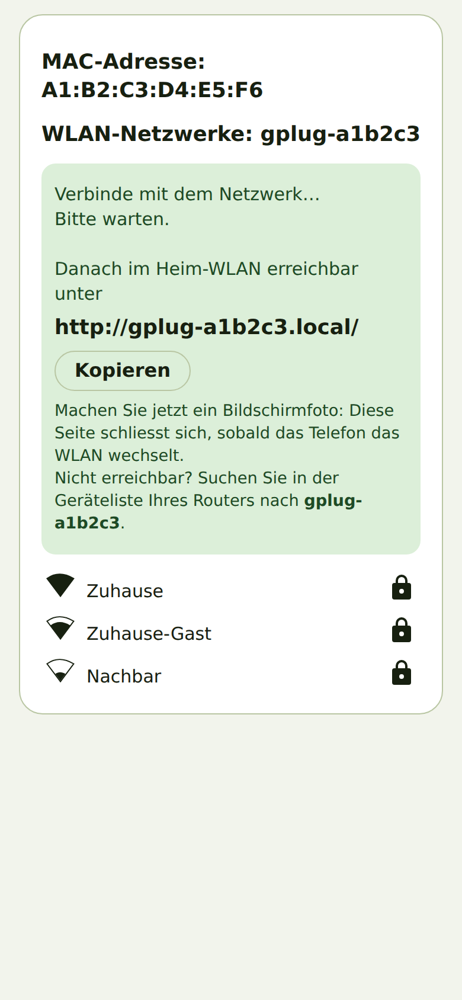

Den gPlug mit dem WLAN verbinden
Worum es geht
Als neue Besitzerin oder neuer Besitzer eines gPlug möchte ich ihn mit meinem Heim-WLAN verbinden, damit ich seine App im Browser öffnen kann.
So geht's
- Stecken Sie den gPlug an die Kundenschnittstelle des Zählers. Solange er kein WLAN kennt, öffnet
er ein eigenes Netz namens
gPlug-Setup. - Verbinden Sie Ihr Telefon mit
gPlug-Setup. Das Telefon öffnet die Einrichtungsseite von selbst; falls nicht, öffnen Sie im Browserhttp://192.168.4.1/. - Tippen Sie in der Liste auf Ihr Heimnetz und geben Sie unter WLAN-Einstellungen das Passwort ein.

Einrichtungsseite mit den gefundenen Netzen - Notieren Sie die Adresse unter Danach im Heim-WLAN erreichbar unter – oder tippen Sie auf Kopieren. Sie hat die Form
http://gplug-xxxxxx.local/. - Tippen Sie auf Speichern. Machen Sie jetzt ein Bildschirmfoto: Die Seite schliesst sich, sobald
das Telefon ins Heim-WLAN zurückwechselt.

Nach dem Speichern: die spätere Adresse des gPlug - Verbinden Sie das Telefon wieder mit dem Heim-WLAN und öffnen Sie die notierte Adresse.
Woran Sie erkennen, dass es geklappt hat
- Unter der notierten Adresse erscheint der Einrichtungsassistent des gPlug.
- Das Netz
gPlug-Setupverschwindet nach kurzer Zeit.
Hinweise
- Die Einrichtungsseite richtet sich nach der Sprache des Telefons.
- Öffnet sich die Adresse nicht, finden Sie den gPlug in der Geräteliste Ihres Routers unter seinem
Namen
gplug-xxxxxxund öffnen dessen IP-Adresse.
Geprüft mit dem Gerätesimulator am 30. September 2026. Auf echter Hardware geprüft: gPlugK 2026-09-16 (Android).